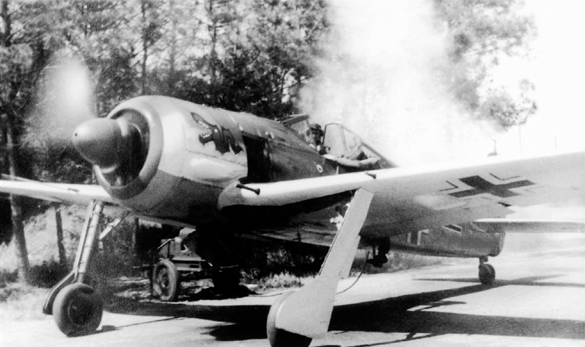

Фокке-Вульф FW-190 (нем. Focke-Wulf FW-190 «Würger») — немецкий одноместный одномоторный поршневой истребитель-моноплан, стоявший на вооружении люфтваффе во время Второй мировой войны. FW-190 успешно использовался в различных амплуа, в частности в роли высотного перехватчика (в особенности FW-190D), эскортного истребителя, штурмовика, ночного истребителя и зарекомендовал себя настоящей «рабочей лошадкой» люфтваффе. Внутри компании «Фокке-Вульф» типам самолётов в качестве дополнительного описания давали имена птиц. FW-190 получил имя нем. «Würger» — «Сорокопут» (небольшая хищная птица).
Осенью 1937 года Имперское министерство авиации заказало нескольким компаниям разработку проекта нового истребителя, для использования совместно с Мессершмиттом Bf.109. Мессершмитт Bf.109 превосходно зарекомендовал себя, однако высшее руководство люфтваффе опасалось, что новейшие иностранные разработки могут превзойти его, и хотело иметь в запасе более современный истребитель.
Конструкторское бюро (КБ) «Фокке-Вульф Флюгцойгбау АГ», возглавляемое профессором Куртом Танком, предложило несколько вариантов самолёта, в основном, с двигателями водяного охлаждения. Однако разработки не вызывали интереса в министерстве до тех пор, пока не был предложен проект с использованием 18-цилиндрового двигателя BMW 139 воздушного охлаждения со звездообразным расположением цилиндров. В то время среди европейских авиаконструкторов такие двигатели не пользовались популярностью, так как считалось, что их большая площадь поперечного сечения создавала слишком большое аэродинамическое сопротивление и ограничивала обзор пилоту, по сравнению с рядными двигателями с жидкостным охлаждением. Однако Танка это не смутило. Вместо того, чтобы оставлять цилиндры двигателя открытыми, улучшая охлаждение и увеличивая лобовое сопротивление, КБ спроектировало носовую часть с небольшим зазором между обтекателем и цилиндрами в сочетании с туннельным коком пропеллера.
В состав группы КБ, разработавших машину, входили: Зам. Танка — Вилли Кютхер (координатор работ); Рудольф Блазер — силовая конструкция; Людвиг Миттельхубер — ответственный по работам в КБ; Ганс Зандер и Курт Мельхорн — выполняющие начальную испытательную программу. Во всей группе 12 человек.
Интерес же к проекту объяснялся тем, что оба германских производителя рядных авиационных двигателей — заводы «Юнкерс» в Дессау и «Даймлер-Бенц» в Штутгарте не могли обеспечить производство нового самолёта. «Даймлер-Бенц» едва справлялся с заказами на изготовление двигателей для Мессершмиттов Bf.109 и Bf.110. «Юнкерс» же обеспечивал моторами собственные Ju-87, Ju-88, а также Хейнкель He-111H.
Первые прототипы
Первый прототип, FW-190V1 под гражданским номером D-OPZE, оснащённый двигателем BMW 139, поднялся в воздух 1 июня 1939 года и сразу продемонстрировал свои исключительные лётные характеристики, отличную управляемость, хороший обзор и высокую скорость (около 610 км/ч в первом полёте). К недостаткам относилась, в первую очередь, высокая скорость сваливания (около 200 км/ч). Лётчики-испытатели, пилотировавшие прототип, отметили также, что его широко расположенное шасси упрощает взлёт и посадку, делая его более безопасным самолётом по сравнению с Мессершмиттом Bf.109.
Переднее расположение кабины, сразу за двигателем, вылилось в очень высокую температуру в ней, достигавшую +55 °C. Лётчик-испытатель Ганс Зандер сказал однажды, что летать в такой кабине «всё равно, что сидеть двумя ногами в камине». Кроме того, проявилась и недостаточная герметизация кабины, из-за чего в неё попадали выхлопные газы, создавая угрозу жизни пилота.
Прототип был передан люфтваффе для испытаний и, как и следовало ожидать, был возвращён производителю для доработки. Дальнейшими работами по доводке самолёта занялся коллектив под руководством Рудольфа Блазера.
Использование туннельного кока (обтекателя) винта не оправдало себя, поэтому все последующие модификации самолёта были с обычным коком. Для лучшего охлаждения двигателя на вал посадили крыльчатку для принудительного охлаждения.
Спустя пять месяцев был построен второй прототип, FW-190V2, двигатель которого уже был оснащён крыльчаткой. Прототип вооружили двумя пулемётами MG 17 и MG 131. По другим данным это были два MG 17.
Новый двигатель
В то же время выпуск двигателей BMW 139 был прекращён, так как модель сочли бесперспективной. Рудольфу Блазеру пришлось отказаться от использования BMW 139 в пользу нового 14-цилиндрового BMW 801. Новый двигатель был того же диаметра, что и BMW 139, но имел большую длину и был на 160 кг тяжелее. Пришлось перерабатывать планер самолёта. Кабина была смещена назад, что негативно сказалось на обзорности, но улучшило климат. Также было усилено шасси, которое оснастили электромеханическим механизмом выпуска, взамен гидравлического. Увеличение веса нового прототипа, получившего название FW-190V5 (FW-190V3 и V4 проектировались под двигатель BMW 139 и не были завершены), негативно сказалось на его лётных качествах — он уступал первому прототипу V1. Для исправления ситуации было принято решение увеличить площадь крыла. Новое крыло смонтировали на все том же FW- 190V5, который назвали FW-190V5g (нем. Grosser — больший), в отличие от старого — FW-190V5k (нем. Kleiner — меньший).
Несмотря на принятые меры, двигатель самолёта (особенно его задняя звезда) продолжал, хотя и в меньшей мере, перегреваться (был отмечен как минимум один случай детонации боекомплекта пушек из-за этого). В действительности же проблема перегрева двигателя была решена только в 1942 году с появлением модели FW-190А-2, на которой устанавливался модернизированный BMW 801 C-2. Значительно улучшила систему охлаждения доработка, предложенная Рольфом Шрёдтером из 54-й истребительной эскадры. Он предложил изменить схему отвода горячего воздуха от цилиндров, причём сделать это можно было даже силами полевых ремонтных мастерских.
Самолёт оснастили прообразом бортового компьютера — управляющим устройством (нем. Kommandogerät), которое брало на себя многие функции, такие как регулировка шага винта, поддержание состава топливовоздушной смеси, форсирование двигателя и выдерживание заданных оборотов на валу. Вообще, на самолёте значительное применение нашли именно электромеханические системы управления, в число которых, кроме уже упомянутых, входили электромеханические закрылки, триммеры, системы управления и перезарядки оружия. Электромеханическое оборудование обладало большей живучестью по сравнению с гидравлическим, и его применение положительно сказалось на боевых характеристиках самолёта.
Западный фронт
После завершения полевых испытаний 190-я испытательная эскадрилья вернулась в состав 26-й истребительной эскадры, которая в то время базировалась во Франции. В скором времени вся 26-я эскадра перешла на новые FW-190A-1. Вслед за ней новые машины получила 2-я истребительная эскадра, также дислоцированная во Франции. 14 августа 1941 года пилот 26-й эскадры Вальтер Шнайдер сбил первый «Спитфайр».
В первые несколько месяцев после появления на Западном фронте FW-190 оставался незамеченным командованием союзников. Новый истребитель с звездообразным двигателем, о котором сообщали пилоты, долгое время считался трофейным французским P-36. Тем не менее, вскоре выяснилось, что новый истребитель превосходит «Супермарин Спитфайр Mk V», бывший в то время основным истребителем британских ВВС, по всем показателям, кроме радиуса виража. Превосходство в небе над Ла-Маншем вновь перешло к люфтваффе, и командование британских ВВС даже планировало совершить специальную операцию по угону одного FW-190 с аэродрома люфтваффе для последующего изучения. Однако в конце июня 1942 года англичане получили полностью исправный FW-190A-3, когда пилот 2-й истребительной эскадры обер-лейтенант Армин Фабер из-за навигационной ошибки приземлился в Уэльсе.
Первой значительной операцией, в которой приняли участие новые самолёты, стала операция «Доннеркайл» (удар грома) (составная часть операции «Цербер» — проводка линкоров «Шарнхорст», «Гнейзенау», и тяжёлого крейсера «Принц Ойген» из Бреста на базы в Германии 11-13 февраля 1942 года). При обеспечении воздушного прикрытия согласно первым сообщениям было сбито 43 британских самолёта — бомбардировщики, торпедоносцы, истребители — были сбиты либо истребителями, либо огнём противовоздушной артиллерии. Эта цифра позднее увеличилась более чем до 60 сбитых самолётов), потери же немецкой авиации составили 11 человек и 17 самолётов (из них 2 FW-190). Причём большая часть истребителей Люфтваффе разбилась при посадке из-за плохой погоды.
Следующий крупный успех пришёл к пилотам FW-190 через полгода, во время высадки десанта союзников под Дьепом. На тот момент в составе 2-й и 26-й эскадр насчитывалось 115 самолётов, в основном FW-190A-3 (во 2-й эскадре также было несколько Мессершмиттов Bf 109G). Со стороны союзников в воздушных боях участвовало около 300 самолётов, преимущественно «Спитфайров MkV». В ходе боёв обе эскадры по различным причинам потеряли 25 машин, заявив при этом 106 сбитых самолётов противника (в том числе 88 Спитфайров). Союзники потеряли 81 пилота убитыми и пленными, люфтваффе — 14 пилотов. Помимо воздушных боёв фокке-вульфы FW-190 успешно использовались против судов союзников.
С лета 1942 года 2-я и 26-я истребительные эскадры активно участвовали в перехвате стратегических бомбардировщиков союзников. В первое время им сопутствовал успех. Однако с 1943 года союзники начали увеличивать численность своей авиации и число потерь FW-190 стало неуклонно возрастать. В том же году американцы развернули широкомасштабную кампанию дневных бомбардировок. В ответ на это были созданы специальные отряды «охотников за бомбардировщиками» с более тяжёлым вооружением. Из-за увеличения веса лётные характеристики самолёта ухудшились, особенно на больших высотах, что делало его более уязвимым для эскортных истребителей союзников.
Кроме истребителей, в составе 2-й и 26-й истребительных эскадр были созданы специальные группы истребителей-бомбардировщиков, которые совершали беспокоящие бомбардировочные рейды на территорию Великобритании.
Восточный фронт
Первые FW-190 появились на восточном фронте 6 сентября 1942 года в составе I группы JG 51, её перебросили под Ленинград (возле Любани). В декабре этого же года этими же самолётами была перевооружена и III группа и 6-я эскадрилья JG 51.
Перед началом весны 1943 года FW-190 получила эскадра JG 54 «Зелёное сердце» («Grünherz»).
До конца 1943 года JG 51 и JG 54 постоянно перебрасывались с одного участка фронта на другой (там где была угроза наступления Красной армии). Так что они появлялись в небе от Ленинграда и до Орла.
Широко использовались FW-190 во время битвы на Курской дуге, перед началом которой Министерство пропаганды Германии провело широкую кампанию по восхвалению нового истребителя и его высоких боевых качеств. Именно на широкое применение FW-190 делалась ставка в ходе проведения летнего наступления этого года.
В течение 1944 года только две авиагруппы, действующие на восточном фронте, из состава JG 54 были оснащены FW-190. В это же время началось перевооружение штурмовых авиагрупп, действовавших на Восточном фронте, с устаревшего Ju-87 на FW-190F.
В целом, опыт применения FW-190 на Восточном фронте показал, что особых преимуществ немецким пилотам его появление не дало — он уступал основным советским истребителям того периода в манёвренности (кроме угловой скорости крена). Однако, большая скорость на пикировании позволяла немецким пилотам относительно легко выходить из боя. А мощное вооружение обеспечивало высокую вероятность поражения противника с первого захода.
Северная Африка
На североафриканском ТВД, с лета 1942 года, в эскадрах люфтваффе применялись FW-190А-4 с двигателями BMW 801 D2 с системой MW 50 (впрыск водно-метаноловой смеси, для кратковременного увеличения мощности).
Кроме того, на самолётах, предназначенных для поддержки Африканского корпуса Роммеля, монтировались дополнительные фильтры, предотвращающие попадание песка внутрь двигателя (модификация FW-190A-4/Trop).
Авиагруппа III/SKG 10 была создана на основе III/ZG 2, воевавшей в Северной Африке, куда она прибыла 14 ноября 1942 г. А уже 16 ноября 12 Fw 190 этой авиагруппы вылетели с аэродрома в Бизерте, неся 250-кг бомбы. Бомбы SC 250 были успешно сброшены на цель, группа потерь не понесла.
В течение последующих недель III группа ежедневно вылетала на задания. Немецкие истребители-бомбардировщики действовали активно и эффективно. Но 2 декабря 1942 г. III/ZG 2 понесла ощутимую потерю. В аварии на взлёте погиб командир группы капитан Вильгельм Гахфельд. Впрочем, дальше удача снова была на стороне немцев, которые действовали гораздо успешнее своих противников — англичан и американцев. Под Новый год, 31 декабря, семь самолётов III/ZG 2, уже сменившей обозначение на III/SKG 10, совершили рейд на базу Сук-эль-Арба и уничтожили на земле 10 истребителей противника.
ПВО Германии
Опыт применения реактивных истребителей Messerschmitt Me.262 показал то, что они слишком уязвимы при взлёте и посадке. Поэтому, для защиты реактивных истребителей из команды Новотны при взлёте и посадке Вальтер Новотны начал использовать FW 190D из Jagdgeschwader 54. В конце 1944 года Адольф Галланд организуя своё элитное соединение реактивных истребителей включил в него специальное звено FW 190D для прикрытия взлётных полос. Это звено базировалось и перебрасывалось вместе с реактивными самолётами. Чтобы не попасть под огонь собственного ПВО, самолёты этого звена получили специальную раскраску — низ самолёта был покрашен в ярко-красный цвет с продольными белыми полосками.
 |
|  |